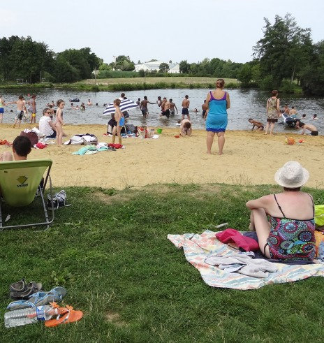

🚧 Projet en cours : Le gîte est actuellement en construction 🚧
📸 Suivez son avancement sur notre blog !
📅 Ouverture en 2027 : Accessible en bail mobilité debut 2027 puis en séjour touristique d'ici l'été.
🗺️ Découvrez déjà les guides et activités locales.
Découvrir la région depuis votre studio à Chaumeré (Domagné)
Idéalement situé au calme de la campagne, notre logement vous permet de rayonner facilement entre histoire, art contemporain et escapades maritimes.
Chargement…--:--
Qualité de l'air : chargement…
Météo à Chaumeré
Chargement…
Carburants à proximité
Chargement…
Sorties du coin
Marchés, food trucks, événements du jour, brocantes…
Flamboyante sentinelle des Marches de Bretagne, cette ancienne cité d'antiquaires dévoile un imposant château médiéval. Son donjon majestueux et ses tours défensives racontent des siècles d’histoire, au cœur d’une charmante Petite Cité de Caractère.
Autour d’un authentique moulin du XVIIe siècle, ce parc historique marie patrimoine et sculptures monumentales. Cet écrin abrite un hôtel trois étoiles, un resto gourmand et un bistrot branché. Le combo parfait pour flâner et se régaler!
Visitez la plus grande forteresse médiévale d’Europe ! Dominant fièrement une cité de caractère aux ruelles pavées et maisons à pans de bois, ce géant de granit et ses onze tours offrent une plongée grandiose dans l'histoire des Marches de Bretagne.
Marchez dans les pas de la célèbre épistolière ! Flanqué d’un magnifique jardin à la française dessiné par Le Nôtre, ce manoir gothique du XVe siècle fut la résidence d'écriture préférée de Madame de Sévigné.
Ce charmant bistrot de village cultive la convivialité et le goût du partage. Sacré parmi les champions de la Coupe de France du Burger, la Cheffe régale avec une cuisine maison, de saison et d'une gourmandise absolue.
Depuis 1121, le marché du mardi matin à la Guerche de Bretagne est une institution incontournable. Classé parmi les plus grands d’Ille-et-Vilaine, il rassemble les habitants de plus de 40 communes. Axé sur les circuits courts, cet événement convivial valorise les producteurs locaux et dynamise le commerce de proximité de toute la région. Il existe une version "light" le samedi matin
Installée à Châteaugiron depuis 2015, cette brasserie conviviale propose des burgers généreux et des bières fraîches dans un décor original. Le spot parfait pour une pause gourmande.
Envolez-vous vers l'Europe ! De Londres à Marseille, cet aéroport à taille humaine vous connecte rapidement à de multiples destinations sans le stress des grands terminaux via AirFrance, KLM, Lufthansa, Easyjet, Volotea, Transavia, Air Corsica et Aer Lingus
Une merveille de l'Occident au cœur de la baie : une abbaye majestueuse perchée sur son rocher, un village médiéval intemporel et le spectacle unique des plus grandes marées d'Europe. Ce lieu est le deuxime monument le plus visité de France après la Tour Eiffel.
Une véritable mer intérieure parsemée d'îles paradisiaques. Entre microclimat, balades en bateau et dégustations d'huîtres, le Golfe est un concentré de douceur de vivre bretonne.
Pas très loin de Chaumeré, cette base verdoyante s’anime aux beaux jours. Entre canoë-kayak, baignade surveillée et barbecues, c'est le rendez-vous estival incontournable des familles.

La plage sur la Seiche
💅 Besoin de décompresser ? Entre plages de sable fin secrètes, spas d'exception et soins beauté sur place, découvrez notre guide Détente & Bien-être autour du gîte !
Au cœur de Rennes,Le Bacchus est un café-théâtre convivial unique. Il combine idéalement comédies, spectacles d'humour et restauration savoureuse pour une soirée culturelle réussie.
Située à Châteaugiron, la salle Le Zéphyr est un espace culturel dynamique. Elle propose une programmation variée entre concerts, pièces de théâtre et spectacles captivants.
A deux pas de Chaumeré le Cabaret Moustache offre un univers de music-hall unique alliant plunes, acrobaties, chants et repas gastronomiques pour une soirée pailletée mémorable...en plein campagne !
Niché dans la chapelle du château, ce centre d'art unique accueille des expositions contemporaines monumentales. Un dialogue magique entre patrimoine médiéval et création moderne
Un espace culturel dynamique dédié aux arts visuels. Découvrez des expositions éclectiques d’estampes et de photographies contemporaines au cœur du pôle culturel de Vitré.
Un monde de Miniatures est à découvrie à Domagné. Ce parc unique et original dévoile un monde miniature fascinant. Une visite insolite idéale en famille pour admirer des reproductions d'une précision remarquable réalisées pendant la retraite d'une agriculteur de la ville.
Situé à Essé, ce dolmen légendaire le plus grand de France est un site magique et mystérieux, parfait pour une balade au cœur des contes, des légendes et de l'Histoire Celte.
Laissez-vous conter Brocéliande à travers une expérience sensorielle unique. Ce cinéma scénographique immersif bouscule vos sens et réveille les esprits de la forêt magique.
Marchez dans les pas de la Marquise de Sévigné. Cette somptueuse demeure gothique et ses jardins à la française racontent les plus belles pages littéraires du XVIIe siècle.
Perdue en lisière de forêt, cette mystérieuse église médiévale cache des fresques du XVe siècle miraculeusement conservées. Une capsule temporelle secrète, à découvrir sur réservation ou lors d’ouvertures exceptionnelles..
🍪 Le Relais de Chaumeré utilise des cookies pour analyser l'audience de ce site via Google Tag Manager. Vous pouvez accepter ou refuser ce suivi. Pour en savoir plus, consultez nos Mentions Légales.